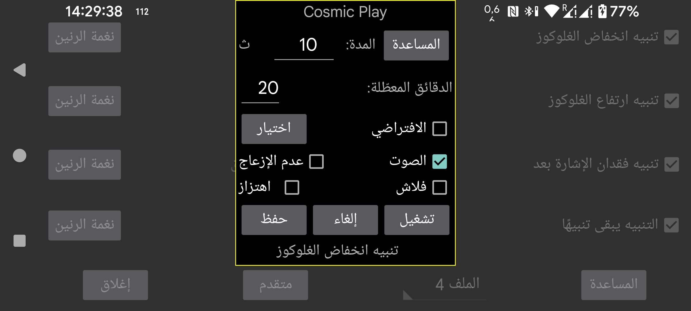

اختر نغمة الرنين التي يجب تشغيلها للتنبيه أو الإشعار، ولمدة كم ثانية.
الدقائق المعطّلة : إذا استمر انخفاض أو ارتفاع الغلوكوز، فلن يُطلق التنبيه مرة أخرى فوراً. يمكنك تحديد بعد كم دقيقة يجب إنشاء التنبيه مرة أخرى إذا استمرت الحالة.
الصوت : تشغيل الصوت.
الافتراضي : استخدام الصوت الافتراضي.
اختيار : اختر نغمة رنين. في بعض هواتف Samsung يتعطل تطبيق اختيار نغمة الرنين المثبّت مسبقاً، لذلك تحتاج إلى تثبيت تطبيق مختلف يمكن للتطبيقات الأخرى استخدامه، مثل: https://play.google.com/store/apps/details?id=com.centralparkapps.ringo.ringtones أو https://apkcombo.com/ringtone-picker/de.kumpewo.ringtones
اهتزاز : اهتزاز.
عدم الإزعاج : إذا كان «عدم الإزعاج» مفعّلًا، فأوقفه قبل تشغيل التنبيه. وإذا لم يكن لدى Juggluco الإذن المطلوب لذلك، فسيتم توجيهك إلى شاشة إعدادات Android لمنح هذا الإذن. وبالضغط على «تشغيل» أثناء تفعيل «عدم الإزعاج» يمكنك اختبار ما إذا كانت التنبيهات ستعمل في هذه الحالة. في الإصدارات السابقة من Juggluco كان «عدم الإزعاج» يُفعَّل مرة أخرى بعد التنبيه. أما في الإصدار الحالي فلم يعد يحدث ذلك، لأن هذا كان يؤدي إلى أثر غير مقصود: فإذا انطلق تنبيه أثناء فترة «عدم الإزعاج» تلقائية، فلن تنتهي هذه الحالة تلقائيًا. وإذا كنت لا تريد سماع التنبيهات أثناء «عدم الإزعاج»، فربما تحتاج أيضًا إلى إلغاء تحديد «التنبيه يبقى تنبيهًا» في الشاشة السابقة.
فلاش : في الهواتف الذكية المزودة بفلاش ضوئي يمكن جعل الفلاش يومض للعدد نفسه من الثواني. وهذا مفيد عندما لا يُسمح بنغمات الرنين ولا توجد سياسة واضحة بخصوص الفلاش.